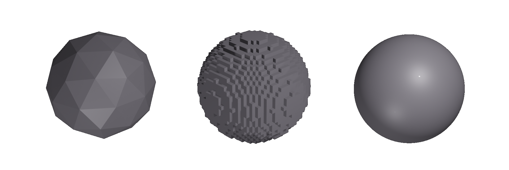

Raymarching
Szenenrepräsentationen
Motivation
Gliederung
Setting
Strahlen
 r(t)=o+dt, t > 0
r(t)=o+dt, t > 0
Signed Distance Function: Kugel
vec2 centre = vec2(0.0, 0.0);
float radius = 10.0;
float D_sphere(vec2 p){
return length(p - centre) - radius;
}
Andere Formen
 [IQ1]
[IQ1]
Signed Distance Functions: Vereinigung
Schnittpunkte finden
Raymarching
Constructive Solid Geometry
Warum Glättungen?


 [IQ2]
[IQ2]
Transformations
s = vec3(1) // spacing pos = pos-s*clamp(round(pos/s),-N,N);
vec3 pos = mat3 RotateX(time) * pos
vec3 pos = mat3 RotateY(time) * pos
sdf -= noise(vec3 pos, float time)
Prozedurale Geometrie